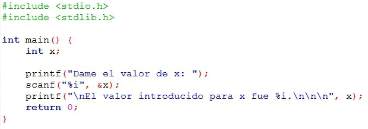

|
Actividad:
Desarrollando programas en C No. 1.
Unidad: Variables, tipos y operadores. |
| Descripción |
 |
- Desarrollarás, en parejas, la solución de algunos
problemas.
|
| Modalidad |
 |
|
| Objetivos
de la actividad |
 |
- Escribir programas simples en C que impliquen el uso
de operadores básicos.
|
| Instrucciones |
 |
Forma de trabajo:
- Intégrate con tu equipo colaborativo y sigue las
indicaciones del profesor.
- Junto con tus compañeros de equipo, analiza cada uno
de los ejercicios que se presentan a continuación. Identifiquen, en
equipo, cual sería el algoritmo para la solución de cada uno de los
ejercicios.
- De manera individual escribe un programa en C para
cada uno de los ejercicios. Recuerda basarte en el algoritmo que se
generó en el equipo.
- Una vez que hayas terminado tu programa, apoya a tus
compañeros de equipo con dudas que tengan (no hagas el laboratorio por ellos
ya que esto sólo los perjudica) .
- Entrega, en la sección de "Envío de Tareas", los
archivos que contengan los programas en C.
- La actividad será evaluada usando la
siguiente rubrica.
Problemas:
El siguiente
programa lee una variable de tipo entera y escribe el valor leído en la
pantalla. Utiliza este programa como ejemplo para desarrollar tus
soluciones.

Operaciones con
variables enteras
- Escribe un programa completo en C, que solicite 3
valores enteros al usuario, y que realice las operaciones aritméticas
mostradas en la parte inferior. El resultado de cada operación debe ser
desplegado en la pantalla (procura guardar el resultado de cada
operación en un variable auxiliar aux
antes de desplegar el resultado de cada operación).
Variables utilizadas
: a,
b,
c
y aux.
Operaciones :
- A / B
- A % B
- A / B - C
- A / ( B - C )
Analiza los resultados de cada operación para los valores de a
= 10 y b
= 5 y c
= 2. casos de prueba F(a,b,c) debe de imprimr en pantalla:
A / B = 2.0
A % B = 0
A / B - C = 0.0
A / ( B - C ) = 3.333
- Escriba un programa completo en C que calcule el
volumen (v) de un cono recto. Los valores dados por el usuario son el
radio (r) y la altura (h). El resultado obtenido (volumen)
debe ser desplegado en la pantalla.
El valor de PI
debe ser declarado como una constante 3.141592.
casos de prueba F(r,h) debe de imprimr en pantalla:
- a) F(10, 2) = : 209.43
- a) F(3, 7) = : 65.9715
Programa Abierto:
Desarrolla
un programa que lleve cabo un cálculo de tu área de interés
y muestre los pasos del cálculo en pantalla, el cálculo debe de
involucrar al menos 4 pasos. Explica en comentarios qué es lo que debe
hacer el programa e incluye el algoritmo en tu programa. Algunas ideas
que puedes usar son: - La trayectoría de un misil.
- El tamaño estimado de la cancha de "Super Campeones".
- La fuerza de la HenkiDama en relación con el número de planetas que hay alrededor.
- La energía requerida para que un cohete salga de la atmósfera.
- La inflación mundial.
- entre otros
Este programa es tuyo, úsalo para hacer cosas interesante y retadoras no cosas fáciles.
|
| Recursos |
 |
|
| Especificaciones
de entrega |
 |
- Los archivos (solamente el .c de cada programa) deberán ser entregados a través de la
sección de "Envío de Tareas" de Blackboard los programas tienen que
llevar por nombre tu matricula y el número de ejercicio e.g. "A008829001.c".
|
 |
| DR©
Tecnológico de Monterrey Campus Querétaro| Departamento de Desarrollo
Académico| México, 2012 |